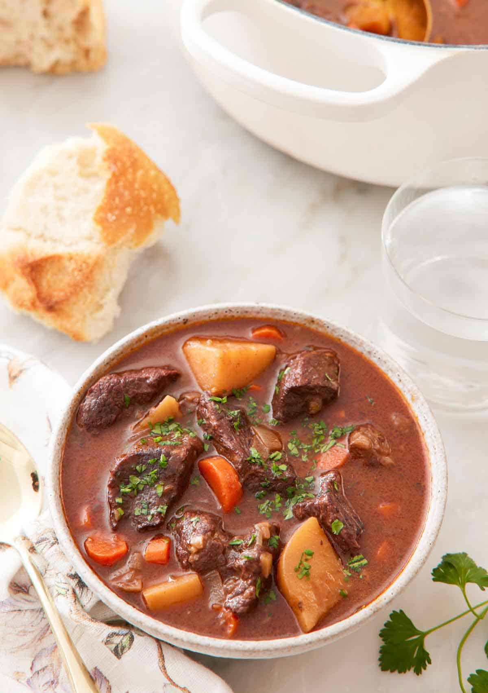
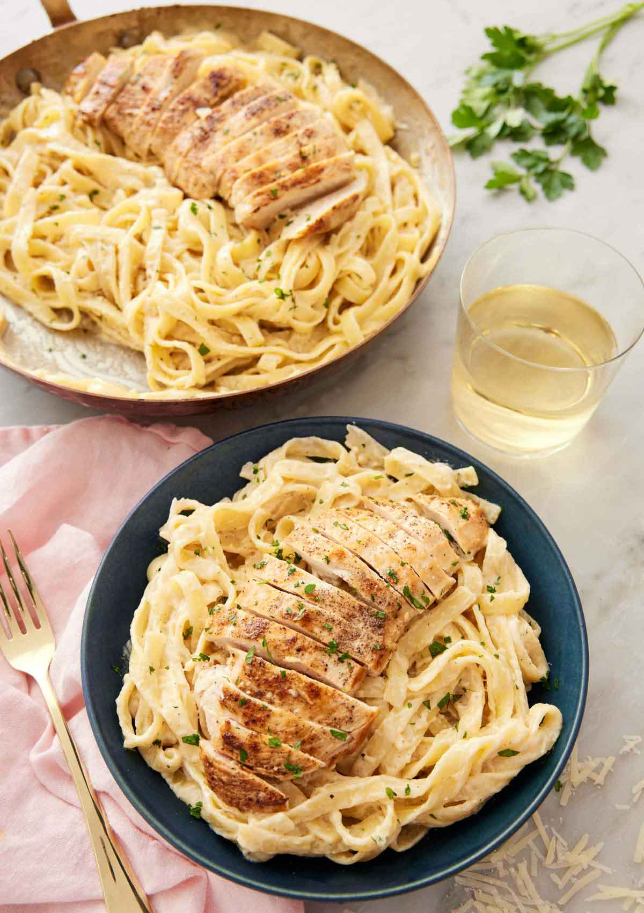
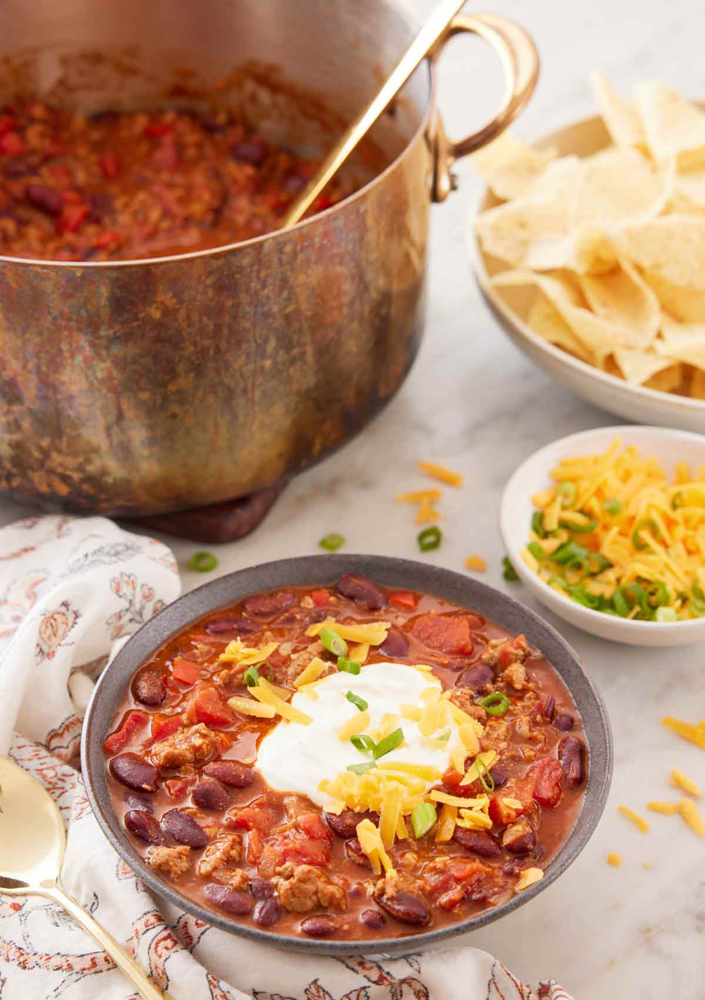

The ultimate recipe for when you’re craving comfort food, this Beef Stew is just what you need on chilly fall and winter days. This stew is bursting with flavor and full of tender, melt-in-your-mouth pieces of beef simmered with onions, potatoes, and carrots. This old-fashioned beef stew is a classic for a reason, it comes together in only a few simple steps and the whole family will want seconds.
This beef stew is a classic dinner recipe that everyone enjoys. It’s a hearty and cozy stew that turns simple, humble ingredients into a flavorful dish. Made up of chunks of tender beef, onion, carrots, and potatoes, it comes together in one pot on the stovetop.
You’ll love how easy it is to make this beef stew. Simply brown the beef, cook the aromatics, and then simmer until all the flavors have blended together. It’s true comfort in a bowl! You’ll be warmed from the inside out with this stew. It’s a foolproof recipe you’ll want to make again and again. Want to make this even more hearty? Serve it with my easy breadsticks, dinner rolls, or French bread to soak up all the delicious broth.
how to make:
This Chicken Alfredo recipe is what dreams are made of! Juicy pieces of chicken over tender fettuccine noodles tossed in a creamy and luscious alfredo sauce, it’ll quickly become your go-to dinner. You can easily whip up this indulgent restaurant-quality meal at home from scratch with a few simple ingredients.
This easy chicken alfredo recipe is the definition of comfort food. What can beat a big bowl of long, thick noodles coated in a dreamy, flavorful alfredo sauce and topped with tender bites of chicken? It’s also a gourmet Italian dinner you can whip up in a few quick steps at home. You won’t believe how simple it is as you don’t need any special ingredients to make this fancy meal. It even comes together in 30 minutes.
Alfredo sauce, fettuccine, and chicken combine beautifully together. It’s such an irresistible meal that’s not just tried and true but also a family favorite. It’s an easy weeknight meal, but it is also perfect for guests. While filling and hearty on its own, this homemade chicken alfredo recipe is absolutely perfect with a side of garlic bread, breadsticks, or homemade garlic knots if you want something to soak up any leftover sauce in your bowl.
how to make:
Rich, hearty, and healthy, this Turkey Chili recipe is a flavorful and comforting dish for an easy weeknight dinner. Loaded with ground turkey, tender kidney beans, and tomatoes, this chili will warm you right up!
This healthy turkey chili recipe is one of my favorite one pot recipes. Full of veggies and ground turkey that is generously seasoned, this chili is perfect for a weeknight meal or a gathering. It has that classic chili flavor you know and love, is thick in texture, but lighter than traditional chili, thanks to the ground turkey. You won’t even miss the beef!
This recipe is definitely a cold-weather favorite, but I love making it all year-round. It’s so easy to make, and leftovers reheat wonderfully. It only takes around an hour to make and yields a tender, delicious bowl of chili every single time.
It’s such a hearty and satisfying recipe, but don’t let that stop you from serving it with some sides! Serve this easy turkey chili with one of my homemade bread recipes like my garlic bread recipe, breadstick recipe, or cornbread recipe!
how to make: